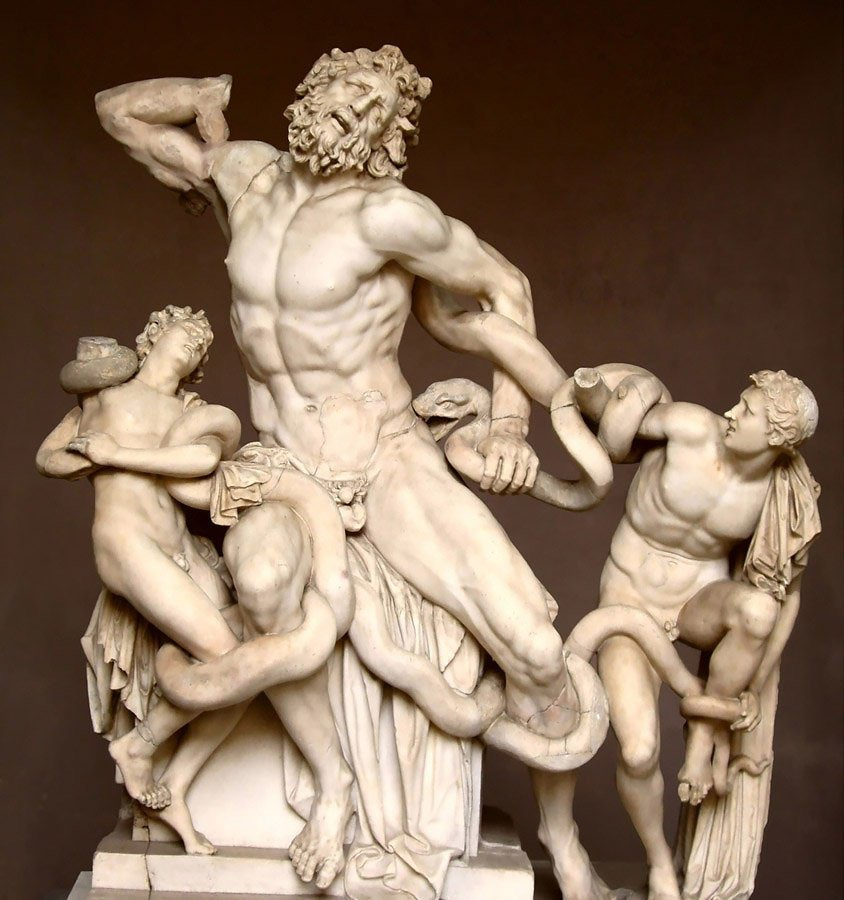
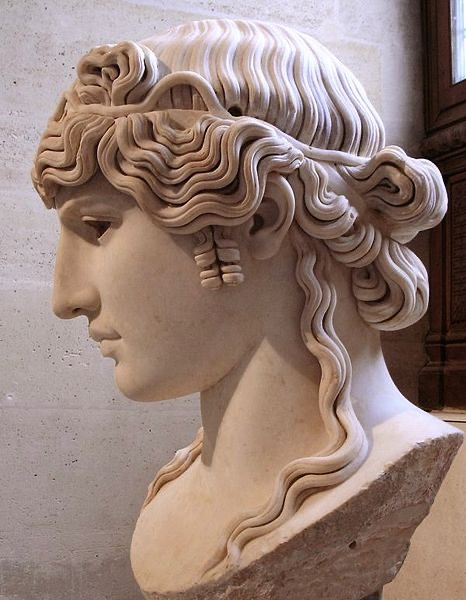
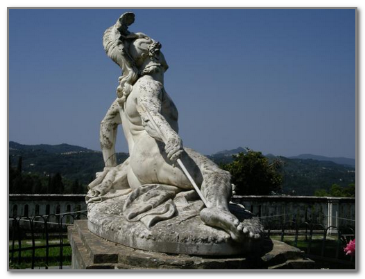
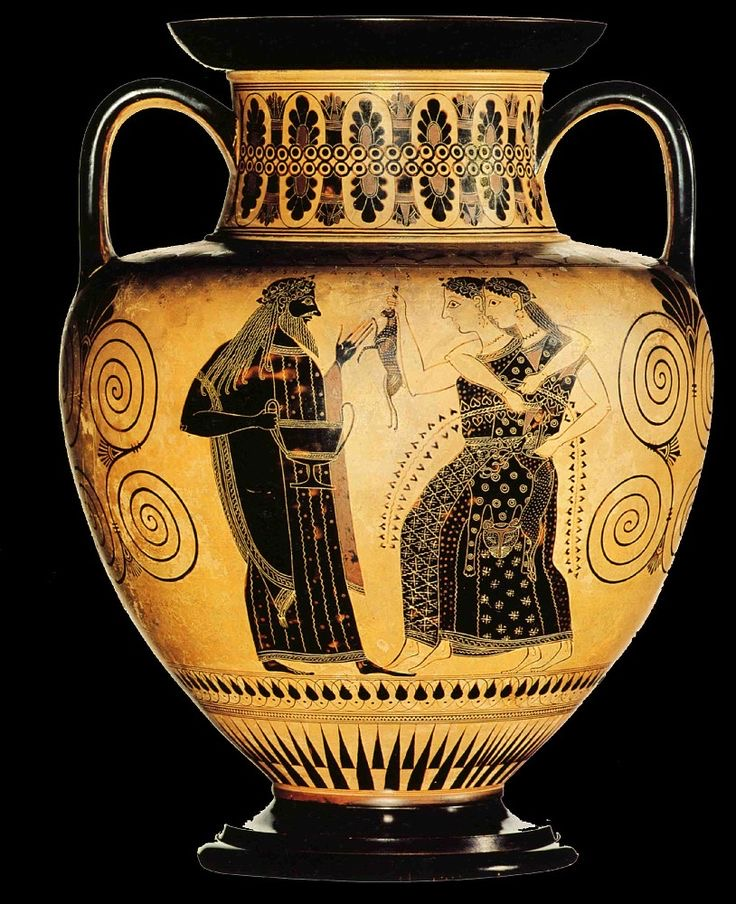
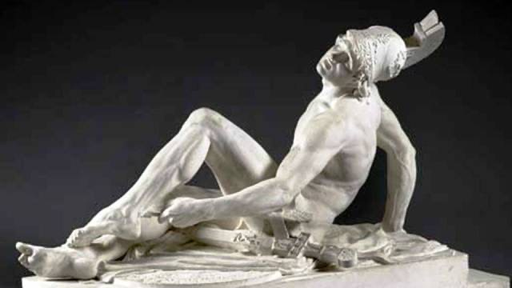
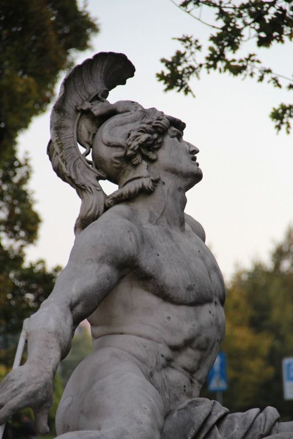
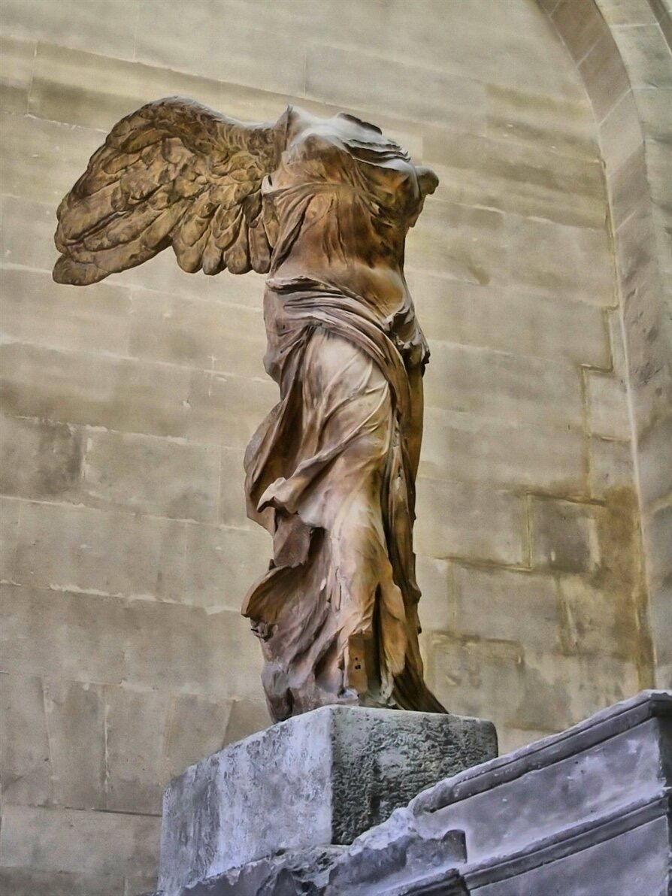
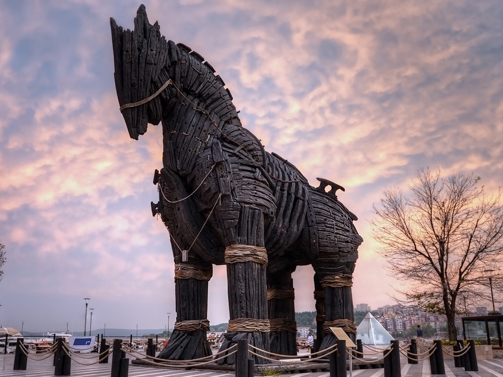
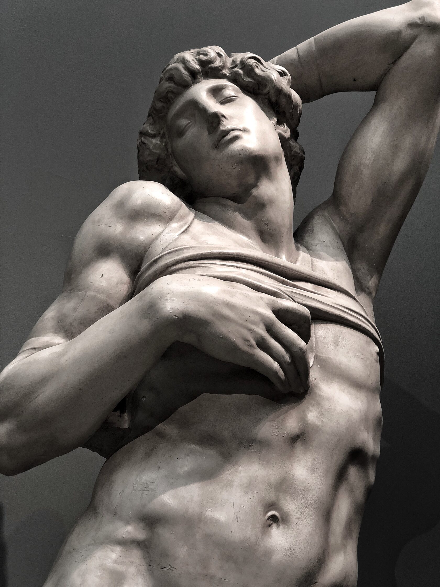

Вы только вдумайтесь, со времен расцвета Древней Греции прошло почти две с половиной тысячи лет, успели возникнуть и исчезнуть в небытии целые народы и цивилизации, изменилась география и природа, миллиарды людей прошли свой земной путь не оставив и следа… но голос Эллады мы слышим до сих пор! Он звучит в наших текстах, мыслях, идеях, образах и поступках, он проник почти во все уголки нашей планеты, он обогатил почти все культуры нашего необъятного мира.
Само слово Эллада для русского уха звучит как тайна, как мечта о волшебном царстве героев, прекрасных дев и сакральных знаний. Да и русский язык (как и многие другие языки) сформировался не без влияния греческой словесности. У профессора Колесова есть очень интересные исследования на эту тему, о влиянии греческого логоса на трансформацию русской ментальности (на сайте СПбГУ).
Мы все больны Элладой. Вдумайтесь в это. Отложите в сторону телефон, книгу или сковородку. Вспомните их имена. Гомер, Гесиод, Солон, Парменид, Гераклит, Пифагор, Демокрит, Софокл, Диоген, Сократ, Платон, Аристотель, Эпикур, Александр Македонский, Поликлет, Фидий, Пракситель, Лисипп… Как это возможно?! Люди, которые были тысячи лет назад живут в нас по сей день. Впрочем, тайну этого феномена, каждый по своему, раскрывают Мартин Хайдеггер, Паола Волкова, Сергей Аверинцев, Мераб Мамардашвили и Александр Дугин.
Мы все обожжены светом этой великой культуры: искусством, философией, поэзией, эстетикой, этикой, мифами… их поисками, их открытиями и их ошибками. Без Древней Греции не было бы ни европейской цивилизации, ни христианского богословия, ни персидского мистицизма, ни исламской мудрости. Именно греки зажгли свет (и тьму) Логоса, этого всепроникающего «текста», на котором была написана вся последующая история человеческого рода. И даже Великий Рим, по сравнению с Элладой кажется завхозом на развалинах золотоносной греческой античности.
Мы все больны Элладой. И дай Бог, чтобы так было всегда, ведь «тот кто умер, тот никогда не жил».



















Древняя Греция